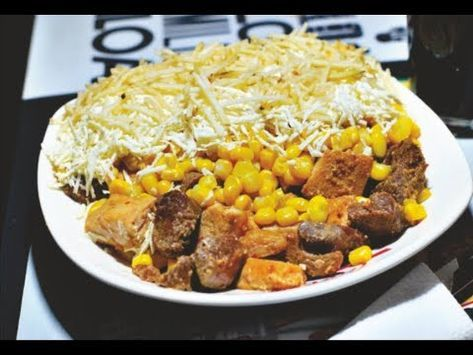

MAZORCADA

Descripción
Una mazorcada colombiana es una celebración tradicional que gira en torno al maíz, un alimento fundamental en la gastronomía y la cultura del país. Este evento suele realizarse en comunidades rurales y urbanas, especialmente en regiones donde el maíz es un cultivo emblemático, como en el Eje Cafetero, Antioquia o Cundinamarca. Durante la mazorcada, se preparan y comparten diversos platos típicos elaborados con maíz, como arepas, mazorca asada, choclo, envueltos y bebidas como la chicha. Es una ocasión para reunir a familias y amigos, disfrutar de la música folclórica, bailes tradicionales y juegos autóctonos, creando un ambiente festivo y lleno de sabor.
Además de ser una fiesta gastronómica, la mazorcada tiene un profundo significado cultural, ya que rinde homenaje a las raíces indígenas y campesinas de Colombia. El maíz, considerado un símbolo de identidad y sustento, se convierte en el protagonista de esta celebración, que también busca preservar y promover las tradiciones locales. En muchos casos, se organizan concursos de cocina, muestras artesanales y actividades educativas para destacar la importancia del maíz en la historia y la economía del país. La mazorcada no solo es una fiesta, sino también una expresión de orgullo por el patrimonio agrícola y cultural colombiano.
Ingredientes (Para 4-6 personas)
- 2 tazas de maíz desgranado (fresco o congelado).
- 2 pechugas de pollo cocidas y desmenuzadas.
- 4 salchichas tipo ranchera o vienesas, cortadas en rodajas.
- 1 taza de champiñones frescos, laminados.
- 6-8 huevos de codorniz cocidos y pelados.
- 1 cebolla mediana, picada finamente.
- 2 dientes de ajo, picados.
- 1 pimentón rojo, picado en cubos pequeños.
- 1 taza de crema de leche.
- 1 taza de queso mozzarella rallado.
- 2 cucharadas de mantequilla o aceite.
- Sal, pimienta y comino al gusto.
- Opcional: cilantro o perejil fresco para decorar.
Preparacion
- Cocina el maíz en agua con sal hasta que esté tierno (si es fresco). Si usas maíz congelado, descongélalo y escúrrelo.
- Cocina las pechugas de pollo, desmenúzalas y reserva.
- Cocina los huevos de codorniz, pélalos y reserva.
- Corta las salchichas en rodajas y los champiñones en láminas.
- En una sartén grande, calienta la mantequilla o el aceite y sofríe la cebolla, el ajo y el pimentón hasta que estén tiernos.
- Agrega las salchichas y los champiñones, y cocina por 5-7 minutos hasta que estén dorados y cocidos.
- Añade el maíz cocido y el pollo desmenuzado a la sartén. Mezcla bien.
- Incorpora la crema de leche y sazona con sal, pimienta y comino al gusto. Cocina por 5 minutos más para integrar los sabores.
- Corta los huevos de codorniz por la mitad y agrégalos a la mezcla, revolviendo con cuidado para no romperlos.
- Transfiere la mezcla a un refractario o bandeja para horno. Espolvorea el queso mozzarella rallado por encima.
- Gratina en el horno precalentado a 180°C durante 10-15 minutos, o hasta que el queso esté derretido y dorado.
- Decora con cilantro o perejil fresco y sirve caliente. Acompaña con arroz blanco, patacones o una ensalada fresca.
Inicio